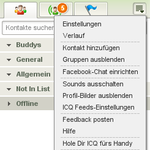

ICQ
Archivierte Anleitung
Dieser Artikel wurde archiviert, da er - oder Teile daraus - nur noch unter einer älteren Ubuntu-Version nutzbar ist. Diese Anleitung wird vom Wiki-Team weder auf Richtigkeit überprüft noch anderweitig gepflegt. Zusätzlich wurde der Artikel für weitere Änderungen gesperrt.
Achtung!
Adobe Air für Linux wird seit Juni 2011 nicht mehr weiterentwickelt. Die letzte Linux-Version ist die Version 2.6. Updates für (neue) Sicherheitslücken sind daher nicht mehr verfügbar.
Zum Verständnis dieses Artikels sind folgende Seiten hilfreich:
ICQ ist ein weit verbreiteter Instant Messaging-Dienst und auch der Name des offiziellen Client-Programms. Dieses ist plattformunabhängig und kann auch auf den Betriebssystemen Mac OS X und Windows verwendet werden.
Das Programm kann zwar kostenlos genutzt werden, ist aber keine freie Software. Darüber hinaus befindet es sich noch in Entwicklung (Beta-Status).
Funktionsumfang:
| Anmeldung |
Einen neuen Benutzer anlegen
"Kennwort vergessen"-Funktion
Versenden von Nachrichten an andere ICQ-Nutzer
Facebook-Chat
Versenden und Empfangen von Dateien
Kontakte sperren/ignorieren
Kontakte hinzufügen
Einteilen der Kontakte in Gruppen
Benutzeravatar ändern
Verwalten der Nachrichtenverläufe
Online Game-Center
Kostenpflichtiges Versenden von SMS-Nachrichten
ICQ Feeds
Wenn die gebotenen Möglichkeiten nicht ausreichen oder freie Software bevorzugt wird: im Artikel Instant Messenger sind alternative Programme zu finden.
Voraussetzungen¶
Um ICQ installieren zu können, wird die Laufzeitumgebung Adobe Air vorausgesetzt. Wie man diese installiert, ist dem entsprechenden Artikel [1] zu entnehmen.
Installation¶
ICQ ist nicht in den offiziellen Paketquellen enthalten. Zunächst muss die Installationsdatei heruntergeladen werden. Bezugsquellen:

Hinweis!
Fremdsoftware kann das System gefährden.
Anmerkung: Alle Programme für Adobe Air haben immer die Endung *.air und werden mit einem einfachen Doppelklick geöffnet.
| Installationsassistent |
Durch die Installation [1] führt ein Assistent. Um den Installationsassistenten zu starten, wählt man die Schaltfläche "Öffnen". Dann folgt man den Anweisungen des Assistenten.
Nach erfolgreicher Installation steht ICQ jedem Benutzer des Systems zur Verfügung. Wenn dies nicht gewünscht wird, so muss während der Installation das eigene Homeverzeichnis angegeben werden.
ICQ kann anschließend über das Anwendungsmenü gestartet werden:
"Anwendungen -> Zubehör -> ICQ"
| Konfigurationsmenü |
Einstellungen¶
Das Konfigurationsmenü kann über das Symbol in der Statusleiste (Trayicon) aufgerufen werden:
Rechtsklick
 auf das Trayicon und dann "Einstellungen"
auf das Trayicon und dann "Einstellungen"
Folgende Einstellungen können hier vorgenommen werden:
| Konfigurationsmenü | |
| Reiter | Beschreibung |
| "Allgemein" | ICQ beim Systemstart öffnen, Automatische Updates aktivieren, Sprachwahl und Nachrichten in einem separaten Fenster öffnen. |
| "Benachrichtigen bei" | Neuer Nachricht, einer neuen Nachricht von einem Benutzer, der nicht in der Kontaktliste ist, bei einer Hinzufügen-Anfrage sowie wenn ein Kontakt erreichbar ist oder offline geht. |
| "Verlauf" | Verlauf speichern und die letzten Aktivitäten anzeigen wenn ein Chat begonnen wird. |
Alle Punkte sind optional wählbar. In der momentanen Version sind keine weiteren Einstellungen oder Modifikationen möglich.
Bedienung¶
Zur Nutzung von ICQ muss man sich zuerst ein Benutzerkonto einrichten. Dies kann über die offizielle Anmeldung  erfolgen. Diese Benutzerdaten können dann im Client-Programm verwendet werden.
erfolgen. Diese Benutzerdaten können dann im Client-Programm verwendet werden.
|  |
| Menü |
ICQ-Feeds einrichten¶
ICQ Feeds ist ein Dienst, der ein ICQ-Konto mit anderen Online-Diensten verbindet. So können Kontakte des Benutzers beispielsweise sehen, welche Fotos gerade auf Facebook hochgeladen wurden, was es neues aus Twitter gibt, oder auch welches Youtube-Video aktuell gefällt.
Eingerichtet wird ICQ-Feeds über das Dropdown-Menü unter dem Menüpunkt
"ICQ Feeds-Einstellungen".
Facebook-Chat verwenden¶
Um den Facebook-Chat einzurichten, folgt man dem Menüpunkt
"Facebook-Chat einrichten"
aus dem Dropdown-Menü. Dazu sind die Facebook-Zugangsdaten notwendig.
 Übersichtsartikel
Übersichtsartikel- Erstellt mit Inyoka
-
 2004 – 2017 ubuntuusers.de • Einige Rechte vorbehalten
2004 – 2017 ubuntuusers.de • Einige Rechte vorbehalten
Lizenz • Kontakt • Datenschutz • Impressum • Serverstatus -
Serverhousing gespendet von